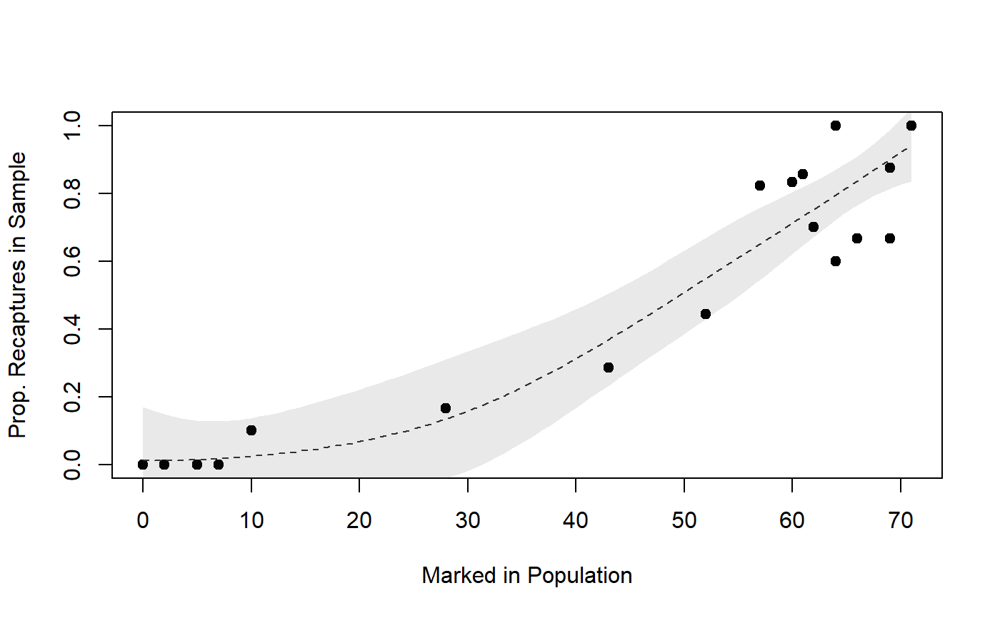

Estimate initial population size for single or multiple census mark-recapture data.
Source:R/mrClosed.R
mrClosed.RdEstimates of the initial population size, along with associated confidence intervals, are constructed from single or multiple census mark-recapture data using a variety of methods. For single census data, the initial population size (N) is estimated from the number of marked animals from a first sample (M), number of captured animals in a second sample (n), and the number of recaptured marked animals in the second sample (m) using either the ‘naive’ Petersen method or Chapman, Ricker, or Bailey modifications of the Petersen method. Single census data can also be separated by group (e.g., size class) to estimate the initial population size by class and for the overall population size. For multiple census data, the initial population size is estimated from the number of captured animals (n), number of recaptured marked animals (m), the number of marked animals that are marked and returned to the population (R), or the number of extant marked animals prior to the sample (M) on each of several samples using either the Schnabel (1938) or Schumacher-Eschmeyer (1943) method.
mrClosed( M = NULL, n = NULL, m = NULL, R = NULL, method = c("Petersen", "Chapman", "Ricker", "Bailey", "Schnabel", "SchumacherEschmeyer"), labels = NULL, chapman.mod = TRUE ) # S3 method for mrClosed1 summary( object, digits = 0, incl.SE = FALSE, incl.all = TRUE, verbose = FALSE, ... ) # S3 method for mrClosed1 confint( object, parm = NULL, level = conf.level, conf.level = 0.95, digits = 0, type = c("suggested", "binomial", "hypergeometric", "normal", "Poisson"), bin.type = c("wilson", "exact", "asymptotic"), poi.type = c("exact", "daly", "byar", "asymptotic"), incl.all = TRUE, verbose = FALSE, ... ) # S3 method for mrClosed2 summary(object, digits = 0, verbose = FALSE, ...) # S3 method for mrClosed2 confint( object, parm = NULL, level = conf.level, conf.level = 0.95, digits = 0, type = c("suggested", "normal", "Poisson"), poi.type = c("exact", "daly", "byar", "asymptotic"), verbose = FALSE, ... ) # S3 method for mrClosed2 plot( x, pch = 19, col.pt = "black", xlab = "Marked in Population", ylab = "Prop. Recaptures in Sample", loess = FALSE, lty.loess = 2, lwd.loess = 1, col.loess = "gray20", trans.loess = 10, span = 0.9, ... )
Arguments
| M | A numeric representing the number of marked fish from the first sample (single-census), an object from |
|---|---|
| n | A numeric representing the number of captured fish in the second sample (single-census) or numeric vector of captured fish in ith sample (multiple-census). |
| m | A numeric representing the number of recaptured (marked) fish in the second sample (single-census) or numeric vector of recaptured (marked) fish in ith sample (multiple-census). |
| R | A numeric vector representing the number of marked fish returned to the population (multiple-census). Note that several references use the number of “new” marks returned to the population rather than the “total” number of marks returned to the population that is used here. |
| method | A single string that identifies the type of calculation method to use in the main function. |
| labels | A character or character vector used to label the rows of the resulting output matrix when using a single census method separated by groups. Must be the same length as |
| chapman.mod | A logical that represents whether the Chapman modification should be used ( |
| object, x | An |
| digits | The number of decimal digits to round the population estimates to. If |
| incl.SE | A logical that indicates whether the results should include the calculated SE value. See details. |
| incl.all | A logical that indicates whether an overall population estimate should be computed when using a single census method that has been separated into sub-groups. See details. |
| verbose | A logical that indicates whether a reminder of the inputted values and what type of method was used should be printed with the summary and confidence interval results. |
| ... | Additional arguments for methods. |
| parm | Not used here (included in |
| level | Same as |
| conf.level | A numeric representing the level of confidence to use for confidence intervals. |
| type | A single string that identifies the distribution to use when constructing confidence intervals in |
| bin.type | A string that identifies the method used to construct binomial confidence intervals (default is |
| poi.type | A string that identifies the method used to construct Poisson confidence intervals (default is |
| pch | A numeric used to indicate the type of plotting character. |
| col.pt | a string used to indicate the color of the plotted points. |
| xlab | A label for the x-axis. |
| ylab | A label for the y-axis. |
| loess | A logical that indicates if a loess smoother line (and approximate 95% confidence band) is fit to and shown on plot. |
| lty.loess | A single numeric used to indicate the type of line used for the loess line. |
| lwd.loess | A single numeric used to indicate the line width of the loess line. |
| col.loess | A single string used to indicate the color of the loess line. |
| trans.loess | A single numeric that indicates how transparent the loess band should be (larger numbers are more transparent). |
| span | A single numeric that controls the degree of smoothing. Values closer to 1 are more smooth. |
Value
A list with the following items
M The number of marked fish from the first sample that was provided.
n The number of captured fish in the second sample that was provided.
m The number of recaptured (marked) fish in the second sample that was provided.
M1 The adjusted (depending on
type) number of marked fish from the first sample.n1 The adjusted (depending on
type) number of captured fish in the second sample.m1 The adjusted (depending on
type) number of recaptured (marked) fish in the second sample.cf A correction factor for the population estimate that depends on
type.method The type of method used (provided by the user).
methodLbl A label for the type of method used.
N The estimated initial population size.
labels Labels for the rows of summary matrix.
Details
For single census data, the following methods can be used:
method="Petersen". The ‘naive’ Petersen as computed using equation 2.1 from Krebs (1989).method="Chapman". The Chapman (1951) modification of the Petersen method as computed using equation 2.2 from Krebs (1989).method="Ricker". The Ricker (1975) modification of the Petersen as computed using equation 3.7 from Ricker (1975). This is basically the samemethod="Chapman"except that Ricker (1975) did NOT subtract a 1 from the answer in the final step. Thus, the estimate frommethod="Chapman"will always be one less than the estimate frommethod="Ricker".method="Bailey". The Bailey (1951, 1952) modification of the Petersen as computed using equation 2.3 from Krebs (1989).
If M contains an object from capHistSum and one of Petersen, Chapman, Ricker, or Bailey methods has been selected with method= then n= and m= can be left missing or will be ignored and the needed data will be extracted from the sum portion of the CapHist class object. If the data were not summarized with capHistSum then all of M=, n=, and m= must be supplied by the user.
The population estimate (as computed with the formulas noted in the table above) is extracted with summary. In addition, the standard error of the population estimate (SE) can be extracted by including incl.SE=TRUE. The SE is from equation 3.6 (p. 78) in Ricker (1975) for the Petersen method, from p. 60 (near bottom) of Seber (2002) for the Chapman method, from p. 61 (middle) of Seber (2002) (and as noted on p. 79 of Ricker (1975)) for the Bailey method, and from equation 3.8 (p. 78) in Ricker (1975) for the Ricker method.
Confidence intervals for the initial population size from the single census methods can be constructed using four different distributions as chosen with type= in confint. If type="suggested" then the type of confidence interval suggested by the rules on p. 18 in Krebs (1989) are used. The general methods for constructing confidence intervals for N are described below
type="hypergeometric". UseshyperCI. This is experimental at this point.type="binomial". UsebinCIto construct a confidence interval for m/n (Petersen method) or (m+1)/(n+1) (Chapman, Bailey, Ricker methods), divides M or (M+1) by the CI endpoints, and subtract 1 (for the Chapman method).type="Poisson". UsepoiCIto construct a confidence interval for m (Petersen method) or (m+1) (Chapman, Bailey, Ricker methods), substitute the CI endpoints into the appropriate equation for estimating N, and subtract 1 (for the Chapman method).type="normal". Used equation 2.4 (p.20) from Krebs (2002) for the Petersen method. For the other methods, used N+/- Z(0.975)*SE, where the SE was computed as noted above.
If incl.all=TRUE in summary and population estimates have been constructed for multiple sub-groups then an overall population estimate is included by summing the population estimates for the multiple sub-groups. If incl.SE=TRUE, then an overall SE is computed by taking the square root of the summed VARIANCES for the multiple sub-groups.
For multiple census data, the following methods can be declared for use with the method= argument:
method="Schnabel". The Schnabel (1938) method as computed with equation 3.15 from Ricker (1975).method="SchumacherEschmeyer". The Schumacher and Eschmeyer (1943) method as computed with equation 3.12 from Ricker (1975) eqn 3.12.
If M contains an object from capHistSum and the Schnabel or Schumacher-Eschmeyer methods has been chosen then n, m and R can be left missing or will be ignored. In this case, the needed data is extracted from the sum portion of the CapHist class object. Otherwise, the user must supply vectors of results in n, m, and R or M.
The population estimate for each method is extracted with summary. Standard errors for the population estimate can NOT be computed for the Schnabel or Schumacher-Eschmeyer methods (a warning will be produced if incl.SE=TRUE is used).
Confidence intervals for the initial population size using multiple census methods can be constructed using the normal or Poisson distributions for the Schnabel method or the normal distribution for the Schumacher-Eschmeyer method as chosen with type=. If type="suggested" then the type of confidence interval suggested by the rule on p. 32 of Krebs (1989) is used (for the Schnabel method). If type="Poisson" for the Schnabel method then a confidence interval for the sum of m is computed with poiCI and the end points are substituted into the Schnabel equation to produce a CI for the population size. If type="normal" for the Schnabel method then the standard error for the inverse of the population estimate is computed as the square root of equation 2.11 from Krebs (1989) or equation 3.16 from Ricker (1975). The standard error for the Schumacher-Eschmeyer method is for the inverse of the population estimate and is computed with equation 2.14 from Krebs (1989) [Note that the divisor in Krebs (1989) is different than the divisor in equation 3.12 in Ricker (1975), but is consistent with equation 4.17 in Seber (2002).] The confidence interval for the inverse population estimate is constructed from the inverse population estimate plus/minus a t critical value times the standard error for the inverse population estimate. The t critical value uses the number of samples minus 1 for the Schnabel method and the number of samples minus 2 when for the Schumacher-Eschmeyer method according to p. 32 of Krebs (1989) (note that this is different than what Ricker (1975) does). Finally, the confidence interval for the population estimate is obtained by inverting the confidence interval for the inverse population estimate. Note that confidence intervals for the population size when type="normal" may contain negative values (for the upper value) when the population estimate is relatively large and the number of samples is small (say, three) because the intervals are originally constructed on the inverted population estimate and they use the t-distribution.
The plot can be used to identify assumption violations in the Schnabel and Schumacher-Eschmeyer methods (an error will be returned if used with any of the other methods). If the assumptions ARE met then the plot of the proportion of marked fish in a sample versus the cumulative number of marked fish should look linear. A loess line (with approximate 95% confidence bands) can be added to aid interpretation with loess=TRUE. Note, however, that adding the loess line may return a number of warning or produce a non-informative if the number of samples is small (<8).
Testing
The results from the single census methods have had the following checks. The population estimates for all methods match reputable sources. The SE for the Chapman and Bailey methods match the results from mrN.single in fishmethods, The CI for the Petersen, Chapman, and Bailey methods partially match (are within 1
The results for the multiple census methods have had the following checks. The population estimates for both methods match reputable sources. The intermediate calculations for both methods match those in Krebs (1989). The confidence interval for the Schnabel method using the Poisson distribution does NOT match Krebs (1989). This appears to be a difference in the use poiCI here versus distributional tables in Krebs (i.e., the difference appears to be completely in the critical values from the Poisson distribution). The confidence interval for the Schnabel method using the normal or the Poisson distribution do NOT match Ricker (1975), but there is not enough information in Ricker to determine why (it is likely due to numerical differences on the inverse scale). The confidence interval for the Schumacher-Eschmeyer method do match Krebs (1989) but not Ricker (1975). The Ricker result may be due to different df as noted above.
IFAR Chapter
9-Abundance from Capture-Recapture Data.
References
Ogle, D.H. 2016. Introductory Fisheries Analyses with R. Chapman & Hall/CRC, Boca Raton, FL.
Krebs, C.J. 1989. Ecological Methodology. Addison-Welsey Educational Publishing.
Ricker, W.E. 1975. Computation and interpretation of biological statistics of fish populations. Technical Report Bulletin 191, Bulletin of the Fisheries Research Board of Canada. [Was (is?) from http://www.dfo-mpo.gc.ca/Library/1485.pdf.]
Seber, G.A.F. 2002. The Estimation of Animal Abundance and Related Parameters. Edward Arnold, second edition.
Schnabel, Z.E. 1938. The estimation of the total fish population of a lake. American Mathematician Monthly, 45:348-352.
Schumacher, F.X. and R.W. Eschmeyer. 1943. The estimation of fish populations in lakes and ponds. Journal of the Tennessee Academy of Sciences, 18:228-249.
See also
See capHistSum for generating input data from capture histories. See poiCI, binCI, and hyperCI for specifics on functions used in confidence interval construction. See mrOpen for handling mark-recapture data in an open population. See SunfishIN in FSAdata for an example to test matching of results with Ricker (1975)' See mrN.single and schnabel in fishmethods for similar functionality.
Author
Derek H. Ogle, derek@derekogle.com
Examples
### Single census with no sub-groups ## Petersen estimate -- the default mr1 <- mrClosed(346,184,49) summary(mr1)#> N #> [1,] 1299#>#> N #> [1,] 1299#> N SE #> [1,] 1299 159#> N SE #> [1,] 1299.3 158.99#> 95% LCI 95% UCI #> [1,] 1034 1666#>#> 95% LCI 95% UCI #> [1,] 1034 1666#> 95% LCI 95% UCI #> [1,] 1049 1670## Chapman modification of the Petersen estimate mr2 <- mrClosed(346,184,49,method="Chapman") summary(mr2,incl.SE=TRUE)#> N SE #> [1,] 1283 142.1#>#> N SE #> [1,] 1283 142.1#> 'data.frame': 277 obs. of 2 variables: #> $ first : int 1 0 1 0 1 1 1 1 1 1 ... #> $ second: int 0 1 0 1 0 0 0 0 0 0 ...#>#> N #> [1,] 1960#>#> 95% LCI 95% UCI #> [1,] 1032 4286### Single census with sub-groups marked <- c(93,35,72,16,46,20) captured <- c(103,30,73,17,39,18) recaps <- c(20,23,52,15,35,16) lbls <- c("YOY","Juvenile","Stock","Quality","Preferred","Memorable") mr4 <- mrClosed(marked,captured,recaps,method="Ricker",labels=lbls) summary(mr4)#> N #> YOY 466 #> Juvenile 46 #> Stock 102 #> Quality 19 #> Preferred 52 #> Memorable 23 #> All 708#> N SE #> YOY 466 88.7 #> Juvenile 46 4.4 #> Stock 102 7.4 #> Quality 19 1.5 #> Preferred 52 2.7 #> Memorable 23 1.8 #> All 708 89.2#>#>#>#>#>#>#>#> N SE #> YOY 466 88.7 #> Juvenile 46 4.4 #> Stock 102 7.4 #> Quality 19 1.5 #> Preferred 52 2.7 #> Memorable 23 1.8 #> All 708 89.2#>#>#>#>#>#>#>#> N SE #> YOY 466 88.7 #> Juvenile 46 4.4 #> Stock 102 7.4 #> Quality 19 1.5 #> Preferred 52 2.7 #> Memorable 23 1.8#> 95% LCI 95% UCI #> YOY 325 691 #> Juvenile 41 60 #> Stock 91 121 #> Quality 18 25 #> Preferred 49 61 #> Memorable 22 31 #> All 533 883#>#>#>#>#>#>#>#> 95% LCI 95% UCI #> YOY 325 691 #> Juvenile 41 60 #> Stock 91 121 #> Quality 18 25 #> Preferred 49 61 #> Memorable 22 31 #> All 533 883#>#>#>#>#>#>#> 95% LCI 95% UCI #> YOY 325 691 #> Juvenile 41 60 #> Stock 91 121 #> Quality 18 25 #> Preferred 49 61 #> Memorable 22 31### Multiple Census ## Data in summarized form ... Schnabel method mr5 <- with(PikeNY,mrClosed(n=n,m=m,R=R,method="Schnabel")) plot(mr5)#> N #> [1,] 87#>#> N #> [1,] 87#> 95% LCI 95% UCI #> [1,] 71 113#>#> 95% LCI 95% UCI #> [1,] 71 113## Schumacher-Eschmeyer method mr6 <- with(PikeNY,mrClosed(n=n,m=m,R=R,method="Schumacher")) summary(mr6)#> N #> [1,] 85#> 95% LCI 95% UCI #> [1,] 76 96### Capture history data summarized by capHistSum() # ignore first column of ID numbers ch2 <- capHistSum(PikeNYPartial1,cols2ignore="id") ## Schnabel method mr7 <- mrClosed(ch2,method="Schnabel") plot(mr7)#> N #> [1,] 128#> 95% LCI 95% UCI #> [1,] 75 238